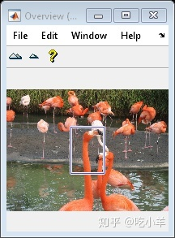
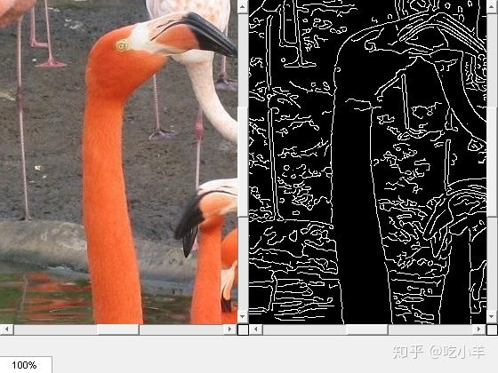

Home
本示例说明如何制作一个GUI，使其在位置和放大倍率同步的滚动面板中并排显示两个图像。
首先，定义一个构建应用程序的函数。本示例使用名为的函数my_image_compare_tool，该函数附加在示例末尾。
在定义了构建应用程序的函数之后，请测试该应用程序。获取两个图像。
I = imread('flamingos.jpg');
L = rgb2lightness(I);
Iedge = edge(L,'Canny');
在应用程序中显示图像。当您在“概述”工具中移动细节矩形或更改一幅图像的放大倍数时，两幅图像都会响应。
my_image_compare_tool(I,Iedge);


应用创建函数
my_image_compare_tool函数接受两个图像作为输入参数，并在滚动面板中显示图像。定制工具还包括概述工具和放大框。请注意，该功能会抑制图形窗口中的工具栏和菜单栏，因为可滚动导航与标准的MATLAB™图形窗口导航工具不兼容。
为了同步滚动面板，该函数使用回调和Scroll Panel API函数在工具之间建立连接。该函数指定一个回调函数，该函数在每次放大倍率更改时执行。指定的setMagnification函数是另一个滚动面板的API函数。因此，每当一个滚动面板中的放大率改变时，另一个滚动面板就改变其放大率以匹配。该工具为位置更改设置了类似的连接。
function my_image_compare_tool(left_image,right_image)
% Create the figure
hFig = figure('Toolbar','none',...
'Menubar','none',...
'Name','My Image Compare Tool',...
'NumberTitle','off',...
'IntegerHandle','off');
% Display left image
subplot(121)
hImL = imshow(left_image);
% Display right image
subplot(122)
hImR = imshow(right_image);
% Create a scroll panel for left image
hSpL = imscrollpanel(hFig,hImL);
set(hSpL,'Units','normalized',...
'Position',[0 0.1 .5 0.9])
% Create scroll panel for right image
hSpR = imscrollpanel(hFig,hImR);
set(hSpR,'Units','normalized',...
'Position',[0.5 0.1 .5 0.9])
% Add a Magnification box
hMagBox = immagbox(hFig,hImL);
pos = get(hMagBox,'Position');
set(hMagBox,'Position',[0 0 pos(3) pos(4)])
%% Add an Overview tool
imoverview(hImL)
%% Get APIs from the scroll panels
apiL = iptgetapi(hSpL);
apiR = iptgetapi(hSpR);
%% Synchronize the left and right scroll panels
apiL.setMagnification(apiR.getMagnification())
apiL.setVisibleLocation(apiR.getVisibleLocation())
% When the magnification changes on the left scroll panel,
% tell the right scroll panel
apiL.addNewMagnificationCallback(apiR.setMagnification);
% When the magnification changes on the right scroll panel,
% notify the left scroll panel
apiR.addNewMagnificationCallback(apiL.setMagnification);
% When the location changes on the left scroll panel,
% notify the right scroll panel
apiL.addNewLocationCallback(apiR.setVisibleLocation);
% When the location changes on the right scroll panel,
% notify the left scroll panel
apiR.addNewLocationCallback(apiL.setVisibleLocation);
end
======================================================================
我的测试结果及程序
下面是我测试的代码：

注：本文根据MATLAB官网内容修改而成。